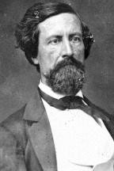

|

|

|
|
|
John Clifford Pemberton was born August 10, 1814 in Philadelphia, Pennsylvania. An 1837
graduate of the U.S. Military Academy, Pemberton saw action in the Second Seminole War and
was decorated for bravery in the Mexican War. In peacetime, he proved to be an effective
administrative officer. Though his defenders would later claim that Pemberton frequently
exhibited pro-Southern sentiments in the years leading up to the Civil War, there is much
evidence to the contrary. When war broke out in 1861, he agonized for weeks before
resigning his commission in the U.S. Army--a decision prompted by years of service in the
South, as well as a Virginia-born wife.
Pemberton's first significant duty came in March 1862, when he was promoted to major
general and took command of the Department of South Carolina and Georgia. Always adept at
military politics, he had moved rapidly upward in rank despite a lack of accomplishments.
The new commander soon was embroiled in controversy. Many South Carolinians feared that
the Northern-born general was not dedicated to an all-out defense of the department.
Pemberton added to their fears by declaring that, if he had to make a choice, he would
abandon the area rather than risk losing his outnumbered army. When state officials
complained to General Robert E. Lee, Pemberton's predecessor and now adviser to
Confederate President Jefferson Davis, Lee told Pemberton that he must defend the
department at all costs. Pemberton was eventually relieved from command, but he had
learned a fateful lesson from Lee.
Despite Pemberton's preference for administrative duties and his problems in South
Carolina, Davis promoted him to lieutenant general and gave him arguably the most
difficult command in the Confederacy. Pemberton was to defend Vicksburg, a Mississippi
city standing on high bluffs above the Mississippi River. Its defenses were the last major
river obstacle to Union shipping.
Taking command of the Department of Mississippi and East Louisiana on October 14, 1862,
Pemberton immediately set to work solving supply problems and improving troop morale. For
several months he enjoyed remarkable success, defeating attempts by Union Gen. Ulysses S.
Grant to take Vicksburg in the winter of 1862-1863. In the spring, however, Grant confused
Pemberton with a series of diversions and crossed the Mississippi below Vicksburg
practically unnoticed. Grant was free to maneuver because Pemberton had remembered Lee's
admonishment and had fought to hold Vicksburg at all costs. Jefferson Davis reinforced
this thinking with an order not to give up the river city "for a single day." Now that
Grant had successfully crossed the Mississippi, Pemberton determined to stay close to
Vicksburg. Davis complicated matters by sending Gen. Joseph E. Johnston to Mississippi to
try to reverse declining Confederate fortunes. Johnston contradicted Davis, ordering
Pemberton to unite his forces and attack Grant, if practicable, even if that meant
abandoning the defense of Vicksburg.
Torn by conflicting orders, Pemberton marked time while Grant swept inland, scoring a
series of quick victories at Port Gibson, Raymond, and Jackson. Pemberton finally took
action, adopting a plan meant to please both Davis and Johnston. He moved his army east
from Edwards Station, all the while maintaining close contact with Vicksburg. A new order
from Johnston forced Pemberton to reverse his course and unite with Johnston's forces that
had been defeated at Jackson. Before the order could be carried out, Pemberton's army
bumped into Grant 's forces at Champion's Hill and suffered a major defeat. Pemberton
retreated to the Big Black River where he suffered more heavy losses. Remembering Lee's
and Davis's orders, Pemberton chose to ignore another order from Johnston to evacuate
Vicksburg. He would try to save the city even if that meant risking the loss of his army.
He retreated into the city where he and his men endured a forty-seven day siege before
surrendering on July 4, 1863. Pemberton became a pariah in the South and was accused by
his immediate superior, General Johnston, of causing the Confederate disaster by
disobeying orders.
John Pemberton might have made a positive contribution to the Confederate war effort
had his talents been properly used. An able administrator, he was uncomfortable in combat.
He had demonstrated his weaknesses in South Carolina, yet Davis had sent him to
Mississippi anyway. A few months after Vicksburg, Pemberton displayed his loyalty to the
Confederate cause by requesting a reduction in rank. He served the remainder of the war as
a lieutenant colonel of artillery in Virginia and South Carolina. After the war, Pemberton
lived in Virginia and Pennsylvania. He died August 14, 1881, and is buried in Laurel Hill
Cemetery in Philadelphia.
Source: Richard N. Current, ed., Encyclopedia of the Confederacy (New
York: Simon & Schuster, 1993), 1188-1189.
|